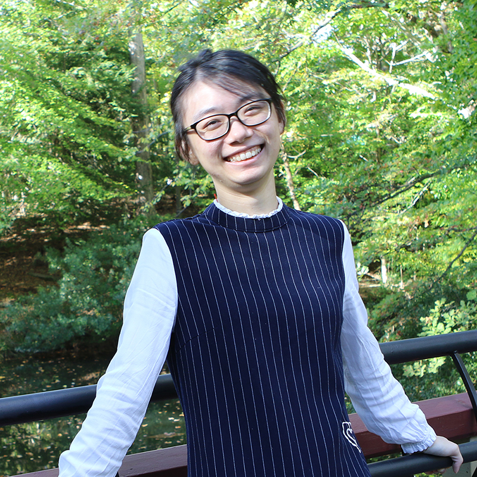

Assistant Professor
George Mason University
Department of Computer Science
Email: lyang28 AT gmu.edu
Office: ENGR 4610
My research interest mainly falls in system reliability, in particular, GPUs (Graphics Processing Units), HPC (High-Performance Computing), and autonomous driving. I received a Ph.D. degree in the Department of Computer Science at William & Mary in 2022, under the supervision of Prof. Evgenia Smirni. Before coming to W&M, I got my bachelor's degree in computer science from University of Science and Technology of China (USTC) in 2016. Check my CV here
>>>>>>>>>
I am fortunated to work with the following students:
Ph.D. Students
• Daehyun Lee since 2026 Fall; MS 2024-2026
• Ying Tang since 2025 Fall
• Giuseppe De Rosa Visiting PhD student from Scuola IMT Alti Studi Lucca, 2025 March-September
• Yu Sun since 2023 Fall
M.S. Students
• Ming Tang Since 2026 Spring
• Rohan Mengle since 2026 Spring, Undergrad 2025
• Zhu Zhu 2023-2026
Undergrad Students
• Dhatri Parakal ECE@UIUC, 2024-2025, recruited from ASSIP
• Cherish Mulpuru 2024-2025, supported by CCI NoVA-node URA program
• Sam O'Neill 2025 Spring
• Weilon Price 2022-2023
High School Students
Through an initiative of “Directed Reading” program with Holton-Arms School
• Sofia Francisco Skamnelos 2024-2025, Reading Topic: Operating Systems
• Grace Xiao 2024-2025, Reading Topic: Operating Systems
• Lucia M. Noto 2024-2025, Reading Topic: Monte Carlo Simulation
My research group is supported by the following research grants:
• NSF, #CCF-2402940, 2024-2027
Collaborative Research: SHF: Medium: End-to-End Resilience in Autonomous Driving Systems: Strategic Vulnerability Assessment and Mitigation
Role: lead-PI
With Dr. Homa Alemzadeh (University of Virginia) and Dr. Evgenia Smirni (William & Mary)
• NSF, #OAC-2410856, 2024-2027
Collaborative Research: Elements: MELIOREM: An Integrated Evaluation Cyberinfrastructure towards Safe and Dependable Autonomous Driving Systems
Role: co-PI
With Dr. Guanpeng Li (lead-PI, University of Iowa)
• NSF, #OAC-2417718, 2024-2028
Collaborative Research: CyberTraining: Implementation: Medium: AI4EDU: Cloud Infrastructure-Enabled Training for AI in Educational Research and Assessment
Role: co-PI
With Dr. Ningfang Mi (lead-PI, Northeastern University), Yu Wang (Temple University), Chiu C. Tan (Temple University), Chuang Wang (University of North Carolina at Charlotte)
• Commonwealth Cyber Initiative (CCI), #HC‐3Q24‐047, Research in Supply Chain Cybersecurity, 2024-2026.
Securing the Machine Learning Components of Autonomous Systems: Risk Assessment and Mitigation
Role: co-PI
With Dr. Evgenia Smirni (lead-PI, William & Mary)
• George Mason University startup fund, 2022-2025.
CS665 Modern Computer Architecture, 2026 Fall
CS672 Computer Systems Performance Evaluation, 2026 Spring
CS692 Special Topics: Advanced Computer Architecture, 2025 Spring
CS692 Special Topics: Reliability in Computer Systems, 2024 Fall
CS692 Special Topics: Advanced Computer Architecture, 2024 Spring
CS475 Concurrent & Distributed Systems, 2023 Fall
CS695 Special Topics: Advanced Computer Architecture, 2023 Spring
CS475 Concurrent & Distributed Systems, 2022 Fall
Program Chairs
2027: PC Associate Chair, The 57th Annual IEEE/IFIP International Conference on Dependable
Systems and Networks (DSN)
2023: General & PC Chair, Dependable and Secure Machine Learning Workshop (DSML)
Program Committees
2027: ASPLOS, DSN, FORGE
2026: Sigmetrics, DSN, PPoPP, HPDC, IPDPS, IISWC, EDCC, HPDC Poster, Sigmetrics SRC, ACM SRC Grand Final, DSN Doctoral Symposium
2025:
Sigmetrics, DSN, PPoPP, ICPE, SRDS, ICDCS,
DT4DRS workshop, U-SPACE workshop, FSE SRC, SC SRC
2024:
Sigmetrics, DSN, ICPE, CLUSTER, SAC,
CCGrid Doctoral Symposium and Early Career
2023:
DSN, SC, IPDPS, HPDC, SRDS
AIPerf workshop, LADC Student Forum, ESANN Special Session
Organizing Committees
2027:
DSN Publication Chair, ICPE Artifact Evaluation Track Chair
2026:
Sigmetrics Student Activities Chair
2025:
Sigmetrics SRC Chair, DSN Artifact Chair, ICPE Industry Track Chair
2024:
Sigmetrics SRC Chair, DSN Posters Track Chair, HPDC Social Media Chair,
ICPE Vision and WiP Track Chair
2023:
Sigmetrics Publicity Chair, HPDC Social Media Chair,
HotStorage Virtual Conference Chair
Steering Committee
•
DSML (Workshop of Dependable and Secure Machine Learning), 2023-Present
Journal Reviewing
• IEEE TC (Transactions On Computers)
• ACM TACO (Transactions on Architecture and Code Optimization)
• ACM TOMPECS (Transactions on Modeling and Performance Evaluation of Computing Systems)
• IEEE TDSC (Transactions on Dependable and Secure Computing)
• IEEE TCC (Transactions on Cloud Computing)
• IEEE Transactions on Reliability
• IEEE/ACM Transactions on Networking (ToC)
• Computers and Electrical Engineering (ScienceDirect)
Panelists
• 2026: The Sixth Workshop on Benchmarking and Performance of Machine Learning Workloads on
Emerging Hardware (MLBENCH)
• 2024: ISSRE Doctoral Symposium Discussion
• 2022: W&M Symposium for Graduate Studies
Outreach Activities
•
Organizing Committee Member of Virginia Women in High-Performance Computing (VA-WHPC): 2025-Present
•
Faculty Advisor of GMU CS-GSA (Graduate Student Association): 2023-Present
• Mentor of SC Mentor-Protégé Program: 2022-2025
• Mentor of DSN Student Mentoring Program: 2026
• Mentor of Sigmetrics Student Mentoring Program: 2026
• Poster Judge: CCI Symposium 2025, ACM Capital Region Celebration of Women in Computing (CAPWIC) 2021/2022/2025
2022/08 - Present Assistant Professor, George Mason University
2021/05 - 2021/08 Software Engineering Intern, Facebook Inc
2019/06 - 2019/10 Reliability Intern, IBM Corporation
2017/05 - 2017/08 Software Engineering Intern, Hytrust Inc
2026 Best Reviewer, SIGMETRICS 2026 (Hardest Worker)
2026 Distinguished Reviewer, PPoPP 2026
2025 Outstanding Teaching Award (Tenure-Line), CS@GMU
2024 Best Paper Finalist, CLUSTER 2024
2024 Best Reviewer Award, ICPE 2024
2022 SPEC Kaivalya Dixit Distinguished Dissertation Award
2022 Student Travel Grant for DSN
2022 Graduate Park Award, William & Mary
2021 vGHC Students and Faculty Scholarship
2021 International Student Opportunity Scholarship, William & Mary
2018 Student Travel Grant for MICRO, ICPE, and NSDI
2018 OGSR Research Grant, William & Mary
2018 Student Leadership Grant, William & Mary
2018 CS Student Travel Grant, William & Mary
2013 Tenth Yang Ya Scholarship, USTC
• IFIP Working Group 10.4 (Dendable Computing and Fault Tolerance), elected in 2025
• ACM Lifetime Member
• IEEE Member
(Misc but probably also important)
• My lab has an unofficial name: randGood. Research is kind of random (because our performance and ideas are not static; we have high-performance days and low-performance days), but we always work towards good ideas, papers, and contributions. Don't panic on low-performance days. Enjoy research, enjoy life!
• Check our group photos
• If you are interested in PhD study, my colleague, Dr. ThanhVu Nguyen, provided many useful information: Applying to Computer Science PhD programs in the US
• A personal suggestion: Think seriously about why you *must* get a PhD before applying :) Samething to faculty position searching: think seriously about why you *must* be a TT faculty before putting yourself on the job market. Just my two cents: There are people who can enjoy doing research, enjoy(?) being tortured by paper rejections, and feel happy dealing with students, but not everyone. Given the unsatisfying PhD/faculty salary, if you could not enjoy the job itself, why don't you find an industry job that has less pressure and is paid higher?
• Some really cool and useful blogs from Dr. Robert Underwood
• I won the first place in the scavenger hunt at ICPE 2024, together with Anna Beatriz Lucena Lira from UFCG
• I am a big fan of Bach ♫ (and bash)
• My recent favorite joke: Because of the bit flips, finally I become an assistant processor :P
• Check my roommate's photo =w= btw now I have 1+4 roommates :)
• I took a group of GMU students to CAPWIC 23. CAPWIC is one of my favorite conferences - not very big, but a warm event to welcome, embrace, and encourage students to the world of computer science :) Check our photos and join us in the future!